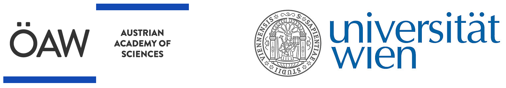

Vienna ELT Science + Simulations Workshop #1
A hybrid meeting for kick-starting observation time proposals for the main ELT science cases in preparation for first-light
Proudly supported by :
The ELT is nominally four years away, or 1.33 PhDs away. Time is ticking for us to start thinking about how to get our hands on ELT data and how to write proposals that the ELT TAC will accept. Each instrument consortium is already working on these topics internally, but are we, as a community, working on this, too?
The Austrian Academy of Science is financing a series of 5 yearly meetings leading up to first light. The main aim is to bring together the future ELT community and to help build the science cases and proposals that will shape the ELT’s initial observing periods.
This three-day hybrid meeting aims to transform the numerous discussions on first-light ELT science topics into simulated observations that can be used to justify observing time in the earliest stages of ELT.
The meeting will complement traditional scientific presentations in the mornings with an observation simulation hackathon in the afternoons.
Raise awareness of the main ELT science cases for the first light instruments MICADO and METIS through a series of scientific presentations (6x 1.5hr sessions @ 15+5 min presentations).
Foster collaboration on science feasibility studies between consortia.
Kick-start observation simulations to enhance feasibility studies and future proposals using the common observation simulator software (ScopeSim).
Create a collection of “toy models” for expected ELT targets in an open-source repository for use by others in the astronomical community.
The deadline for regular registration is the 1st of November, 2024. The meeting will be limited to a maximum of 25 participants, with everybody being given a chance to present their science case (~15+5 min).
PhDs and early Post-Docs are able to apply for subsidised accommodation. The registration deadline for subsidised hotels is 18th of October, 2024.
Main Building of the University of Vienna, Lecture Hall 27
Start: Wednesday, 27th of Nov, 11:00
End: Friday, 29th of 2024, 12:30
Optional ScopeSim Help-Desk available until 16:00 on Friday
Individual presentations will follow a 15+5 min format.
Presenters are encouraged to additionally address the following topics during their talk:
The five annual meetings aim to highlight the science cases which can best make use of a specific benefit of ELT observations. The following meetings will be organised with an emphasis on the following themes:
Which science cases will make the biggest splash early on, in both a scientific and a “public outreach” sense. The so-called low-hanging fruit.
How will our science cases be able to profit most from the spatial resolution of a 40 m mirror.
What do we expect to see at the edge of the sensitivity limits of the ELT? How will the ELT be able to improve upon the success of JWST in this regime?
Both first light instruments include various coronagraphic modes. What do we expect to be able to discover at single digit lambda/D distances with the ELT.
Sub-milliarcseond astrometry will be part of everyday operations at the ELT. How can we use this capability to enhance our knowledge of the “moving” universe?
If you have any questions regarding the meeting, please reach out: